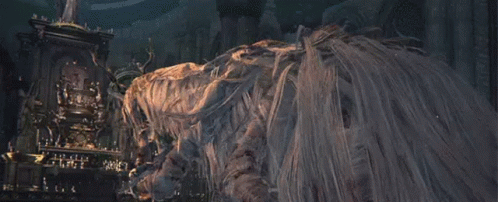

Vicar Amelia

Description
Amelia is one of the high-ranking members of the Healing Church, and also the current owner
of the golden pendant passed down generations from the original founder of the Church, Laurence.
She awaits inevitable beast transformation like the rest of her colleagues.
Tips
- Serrated and Fire weapons will cause bonus damage as she is a beast-type boss.
- You can attack and break each limbs individually followed by a chance for a visceral attack.
- She has a limited attack pattern if you stay on her right side.